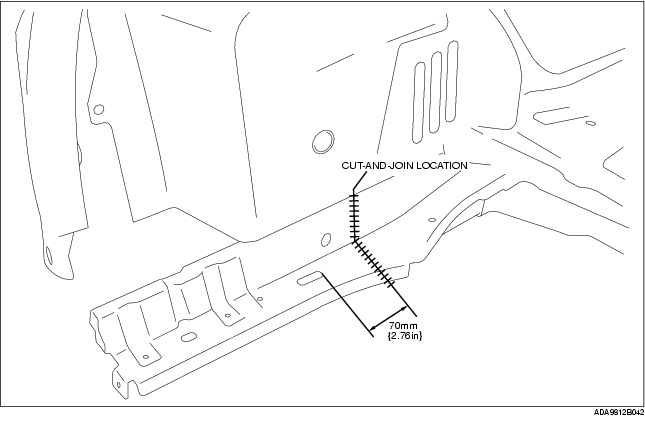

1. Cut the new and old parts at the cut-and-join location, and bevel the parts.
2. When installing new parts, position each part so that the section measurement aligns to the standard dimensions.
3. After trial-fitting new parts, make sure the related parts fit properly.
